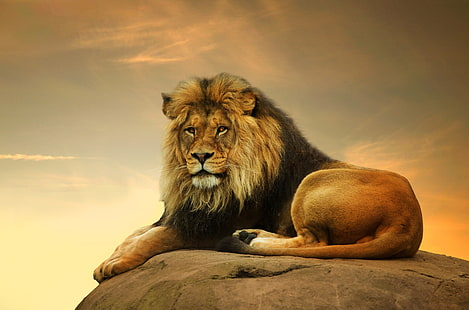
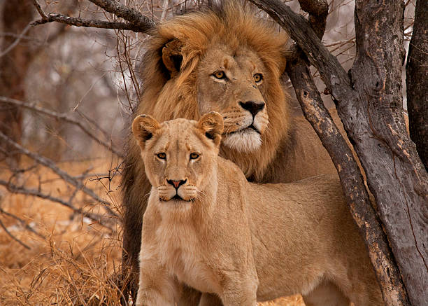
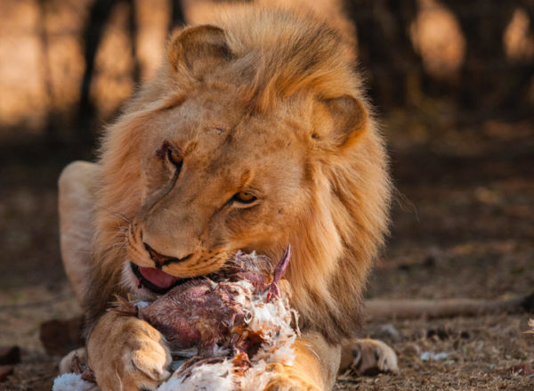
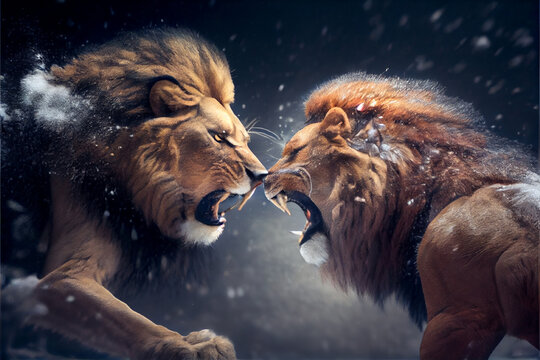
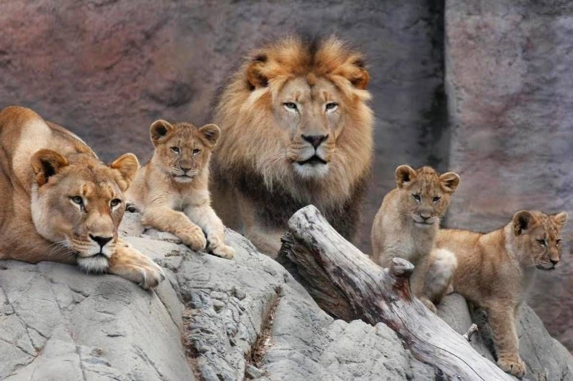

AFRICAN LION
-

Often dubbed as lion, is a species in the family felidae (cat family); it is a muscular deep-chested cat with a short round head, reduced neck and has round ears.
-

Males are relatively larger than females with a typical weight ranging from 150-250kg for males and 120-182kg for females.
-

Lions are regarded as carnivours therefore eat meat
-

Lions are known to engage in aggressive behavior after mating, which is believed to be related to the competition for mating opportunities. Male lions often fight to establish dominance and control over a pride of females, as well as to ensure that their own genes are passed on to the next generation. This behavior is part of the natural mating and reproductive strategies of lions, and it reflects the intense competition for resources and reproductive success in the wild.
-

Lioness normally leaves the pride to give birth to their cubs. Lion babies first start to eat meat at about three months old. The first meat that this group of cubs tasted was a warthog. Although the lion cubs are already interested in hunting at a year old, these skills will only be proficient at around two years old. They also rely heavilly on their mothers and hunt as seen by the adult lions.